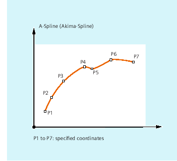
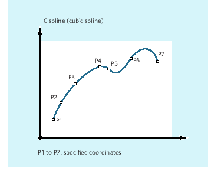
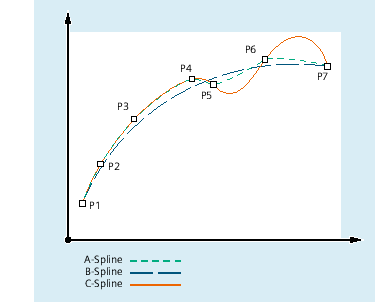

Spline interpolation (ASPLINE, BSPLINE, CSPLINE, BAUTO, BNAT, BTAN, EAUTO, ENAT, ETAN, PW, SD, PL): Further Information
Further information
Advantages of spline interpolation
With spline interpolation, the following advantages can be obtained contrary to using straight line blocks G01:
-
The number of part program blocks required to describe the contour are reduced
-
Soft, curve characteristics that reduce the stress on the mechanical system at transitions between part program blocks.
Properties and use of the various spline types
Spline type | Properties and use |
|---|
A spline |  Properties: Passes exactly through the specified intermediate points along the curve. The curve characteristic is tangential, but does not have continuous curvature. Produces hardly any undesirable oscillations. The area of influence of changes to intermediate points along the curve is local. This means that a change to an intermediate point along the curve only affects up to max. 6 adjacent intermediate points.
Application: The A spline is especially suitable for interpolating curves with large changes in the gradient (e.g. staircase-type curves and characteristics). |
B spline |  Properties: Does not run through the specified intermediate points along the curve, but only close to them. The intermediate points to not attract the curve. The curve characteristic can be additionally influenced by weighting the intermediate points using a factor. The curve characteristic is tangential with continuous curvature. Does not generate any undesirable oscillations. The area of influence of changes to intermediate points along the curve is local. This means that a change to an intermediate point along the curve only affects up to max. 6 adjacent intermediate points.
Application: Their B spline is primarily intended as interface to CAD systems. |
C spline |  Properties: Passes exactly through the specified intermediate points along the curve. The curve characteristic is tangential with continuous curvature. Frequently generates undesirable oscillations, especially at positions where the gradient changes significantly. The area of influence of changes to the intermediate points is global. This means that if an intermediate point is changed then this influences the complete curved characteristic.
Application: The C spline can be well used when the intermediate points lie on a curve defined analytically (circle, parabola, hyperbola). |
Comparison of three spline types with identical interpolation points

Minimum number of spline blocks
The G codes ASPLINE, BSPLINE and CSPLINE link block end points with splines. For this purpose, a series of blocks (end points) must be simultaneously calculated. The buffer size for calculations is ten blocks as standard. Not every piece of block information is a spline end point. However, the control needs a certain number of spline end-point blocks for every ten blocks:
Spline type | Minimum number of spline blocks |
|---|
A spline: | At least 4 blocks out of every 10 must be spline blocks.
These do not include comment blocks or parameter calculations. |
B spline: | At least 6 blocks out of every 10 must be spline blocks.
These do not include comment blocks or parameter calculations. |
C spline: | The required minimum number of spline blocks is the result of the following sum: Value of MD20160 $MC_CUBIC_SPLINE_BLOCKS + 1 The number of points to calculate the spline segment is entered in MD20160. The default setting is 8%. At least 9 blocks out of every 10 must be spline blocks. |
| Note |
An alarm is output if the tolerated value is undershot and likewise when one of the axes involved in the spline is programmed as a positioning axis. |
Combine short spline blocks
Spline interpolation can result in short spline blocks, which reduce the path velocity unnecessarily. The "Combine short spline blocks" function allows you to combine these blocks such that the resulting block length is sufficient and does not reduce the path velocity.
The function is activated via the channel-specific machine data:
MD20488 $MC_SPLINE_MODE (setting for spline interpolation).
Further information: Function Manual Basic Functions